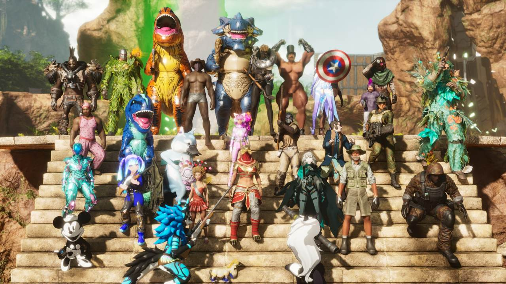
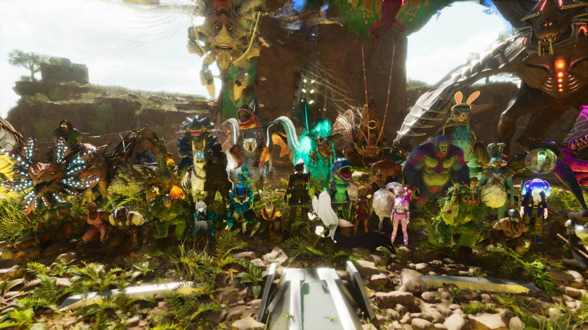
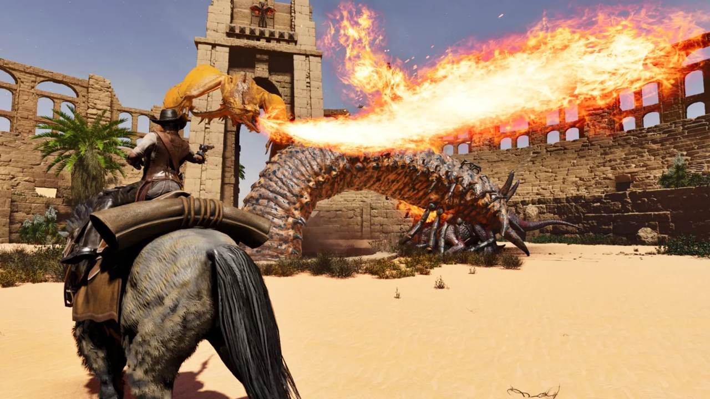

ARK:SA ・ パルワールド
あなたの新しい遊び場がここにある。
好きなゲームをきっかけに入った遊び場が、いつしか自分の居場所になっていく。
お知らせ
公式Discordの #お知らせ から、最新の1件を表示しています（プロトタイプでは例）。
お気に入り
準備完了。村へようこそ！
ARK:SAの各マップが、いま入れるかどうかを確かめられます（プロトタイプでは例）。
info毎日5:00の再起動中は、数分間すべてのマップが「起動中」になります。
ARK:SAのポイント
困ったら管理者に相談
復元や迷惑行為の相談を受け付けます
待ち時間の長い作業だけ速く
テイム・孵化は速く、経験値は控えめ
拠点の維持がかんたん
1マップに入れば、全マップの撤去期限がのびます
バランスを崩さない便利機能
ポイントショップ、生物の一括収納など


参加する前に、すべてのルールに目を通してください。基本的に、ほかの人に迷惑をかける行為は禁止です。
禁止事項
知っていれば必ず避けられることです。違反した場合は、悪質と判断して対応します。カードを押すと、くわしい説明と例を読めます。
マナー
守ってほしいお願いです。公開サーバーなので、譲り合って遊びましょう。
違反を見つけたら
alternate_email投稿先は、Discordの「ark依頼・募集・周知」フォーラムです。メンションする相手は、トライブ所属情報で確かめてください。ソロトライブの場合は、本人に直接メンションします。
info「〇〇って違反ですか？」と聞くと議論になりやすいので、対応のお願いだけにしてください。まわりの方も、状況がわからないまま意見を言うのは控えましょう。
違反したときの対応
悪質な違反は、ほかの非公式サーバーの管理人とプレイヤー情報を共有するため、そちらでも遊べなくなります。
さいごに
- groupsルールにないもめごとには、管理者は関わりません。当事者どうしで話し合って解決してください。
- forum質問は「ark質問」、ほかのメンバーへの依頼は「ark依頼・募集・周知」（どちらもDiscordのフォーラム）へ。
- support_agent管理者への依頼・連絡・要望は、管理者依頼から。
- mail_lock質問や依頼をDMで送ったり、フレンド申請をしたりしないでください。
history更新履歴expand_more
- 2025-01-09コミュニケーション関連の記述を変更
- 2025-01-04グリッチ・バグの悪用に例を追加
- 2025-01-04不等価取引を禁止事項に追加
- 2024-12-22無償譲渡を禁止事項に追加
違反を見つけたら
チーターや迷惑行為の被害にあったときは、Discordのパルワールド総合チャンネルに投稿してください。
違反したときの対応
さいごに
- groupsルールにないもめごとには、管理者は関わりません。当事者どうしで話し合って解決してください。
- support_agent管理者への依頼・連絡・要望は、管理者依頼から。
- mail_lock質問や依頼をDMで送ったり、フレンド申請をしたりしないでください。
history更新履歴expand_more
- 2026-07-12禁漁区への建設を禁止事項に追加。マナーに商人の捕獲を追加
- 2024-01-28新規作成
Scribeでの探しかた
- 1loginDiscordでログイン
- 2tune見る範囲を選ぶ（自分の記録／トライブの生物）
- 3filter_alt期間・マップ・記録の種類で絞り込む
- 4visibility日時・マップ・内容を確認
記録が見つからないとき
block管理者へのDMは禁止です。依頼は必ずElderから出してください。
Elderで依頼できること
paid所持品・生物の復元は有償で、BRONZE以上の方が対象です。
依頼の前後に
ランクを選ぶ
ランクが上がるほど、使える特典が増えていきます。
特典をくらべる
チェックの付いた特典が、そのランクで使えます。棒が長いほど、日数やポイントが多くなります。
swipe横にスクロールすると、ほかのランクも見られます。
上位のランクは下位の特典をすべて含みます。支払いはMoneta。申し込みはムギ（右下の「ムギに相談」）が受け付けます。
解決しないときは
ログインすると使えます
- timer撤去期限lock
- toll残高lock
- support_agent依頼状況lock
- linkARK連携lock
ARK:SAの撤去期限
infoどれか1つのマップに入ると、全マップの期限がのびます。
残高
1,250Moneta
ランクの申し込みに使えます。
依頼状況
Elderで出した依頼です。1件ずつ押すと、Elderで詳しく見られます。
support_agent新しく依頼する